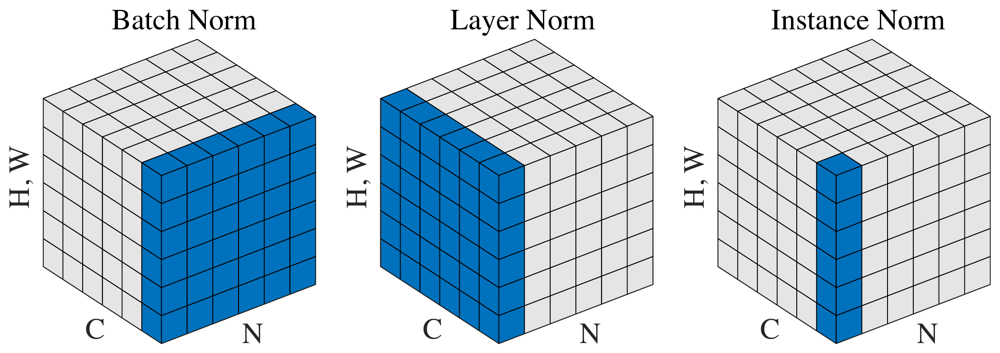
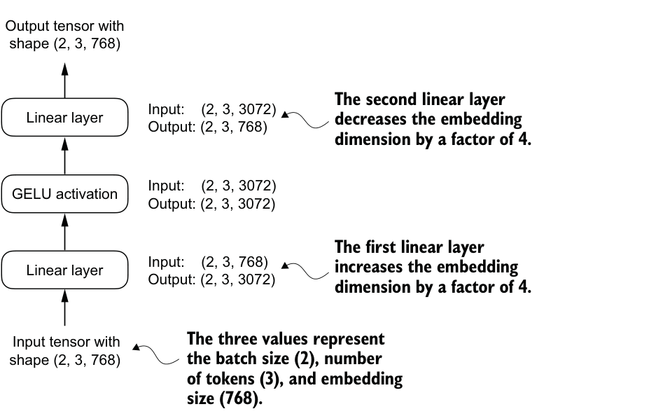
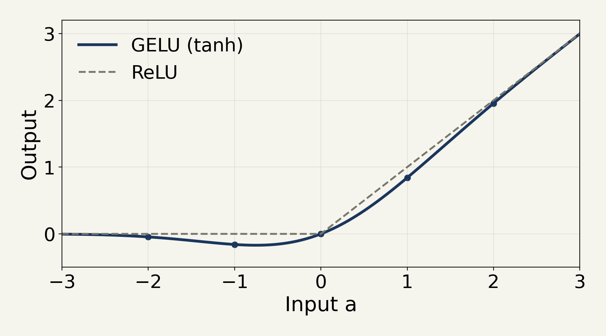
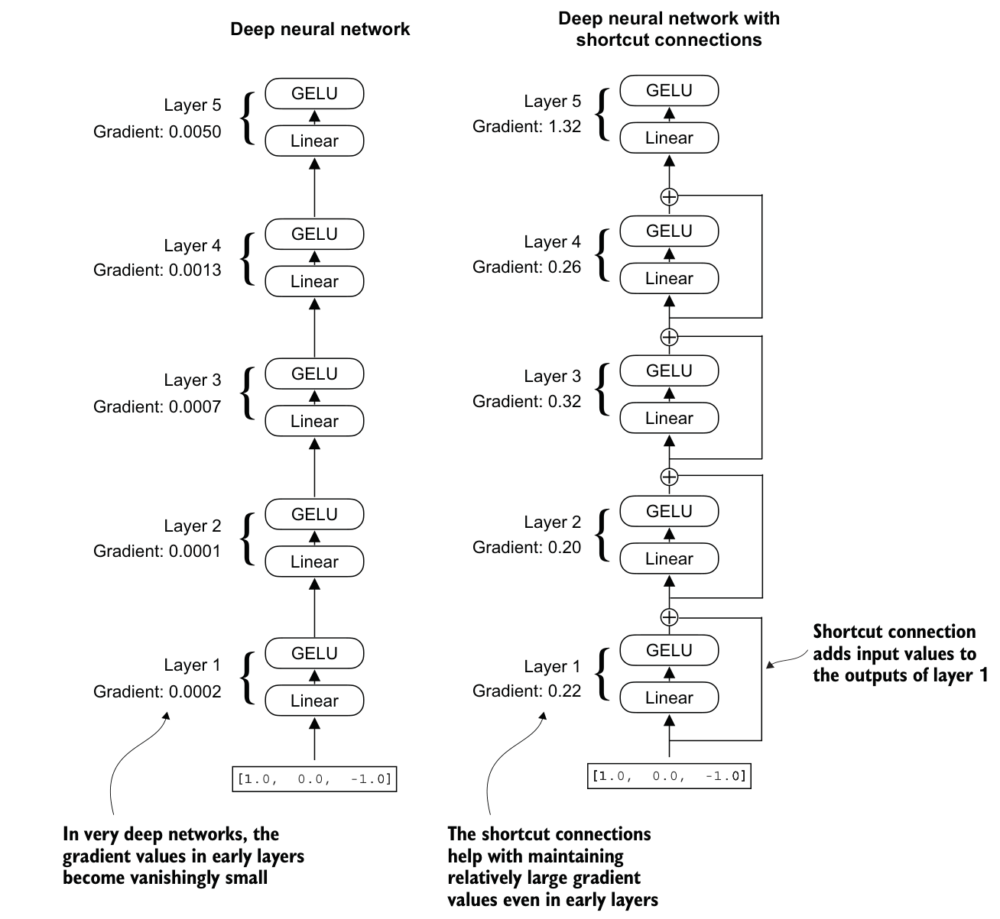
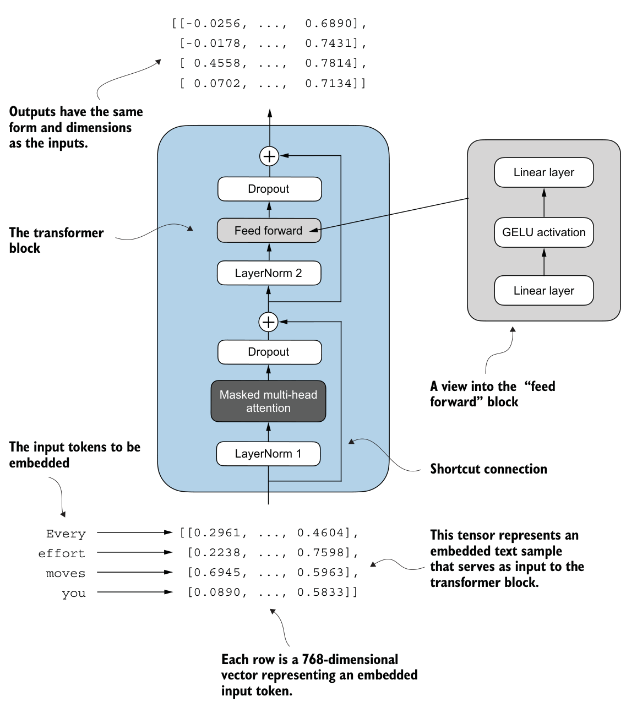
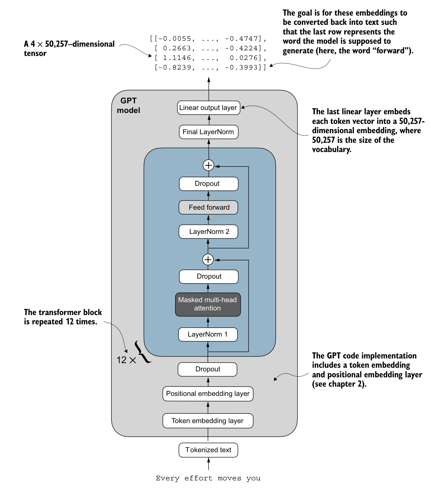

Outline
이미 배운 attention은 토큰 사이의 정보를 모은다. 이제 그 정보를 정규화·가공하고 입력에 더해, 어휘별 다음 토큰 점수를 내는 GPT의 구조를 완성한다.
| 출발점과 남은 문제 | 학습할 구성요소와 역할 |
|---|---|
| 토큰 ID·임베딩·causal attention | 선행 지식: 입력을 숫자로 바꾸고 참조할 정보를 모은다. |
| 여러 층을 통과하며 특징값의 중심·크기가 달라짐 | LayerNorm: 토큰별 특징을 정규화한다. BatchNorm·InstanceNorm과 통계 범위를 비교한다. |
| 모은 특징에 새로운 조합이 필요함 | FFN: 비선형 함수 GELU를 포함해 특징을 가공한다. |
| 깊은 변환을 거치며 입력·기울기 전달이 어려워짐 | 잔차 연결: 입력을 변환 결과에 더한다. |
| 문맥 특징만으로는 토큰을 선택할 수 없음 | Transformer block: attention·정규화·FFN·잔차 연결의 묶음. 이를 쌓고 출력층에서 후보별 점수로 바꾼다. |
고정 입력과 추적할 특징
“나는 차를 마신다”를 세 토큰으로 나눈 설명용 어휘다. 실제 BPE 결과가 아니며, 행은 토큰 위치·열은 특징이다.
| 토큰 / ID | 토큰 임베딩 | 위치 임베딩 | 합친 입력 x |
|---|---|---|---|
| 나는 / 0 | [1,2,1,2] | [0,1,0,1] | [1,3,1,3] |
| 차를 / 1 | [0,1,0,1] | [0,1,0,1] | [0,2,0,2] |
| 마신다 / 2 | [2,1,2,1] | [1,0,1,0] | [3,1,3,1] |
덱 전체에서 추적할 예제의 입력은 “나는 차를 마신다”다. 토큰 수 T=3, 특징 수 D=4다. 두 임베딩을 같은 위치·같은 특징끼리 더하므로 [3,4]가 유지된다. 위 값은 계산을 추적하기 위해 고정한 값이다.
두 임베딩은 학습할 저장값이고, x는 이 입력에서 계산한 특징이다. 이 표에서는 문장 1개를 나타내는 축을 생략했다. 모델에 들어가는 x는 [1,3,4]다.
LayerNorm의 목적과 평균·분산 계산
LayerNorm은 한 토큰의 특징값에서 평균을 빼고 표준편차로 나눈다. 다음 변환에 들어갈 값의 중심·크기를 맞춘다. 아래는 학습 가능한 변환 전 단계다.
첫 토큰 x=[1,3,1,3], 특징 수 D=4.
μ는 평균, σ²는 분산, i는 특징 위치다.
분산은 (xᵢ−μ)²의 평균이다. 편차 [−1,1,−1,1]의 제곱 [1,1,1,1]을 더해 특징 수 D=4로 나눈다. 맞출 대상이 이 토큰의 특징값 4개 자체이므로, 그 4개가 평균에서 떨어진 정도를 그대로 평균한다. 교재 구현과 PyTorch nn.LayerNorm도 D로 나눈다.
| 입력 → 중심을 뺀 값 | 정규화 결과 |
|---|---|
| [1,3,1,3] → [−1,1,−1,1] | 약 [−1,1,−1,1] |
| 10x+5=[15,35,15,35] → [−10,10,−10,10] | 약 [−1,1,−1,1] |
둘째 입력의 분산은 100이다. ε를 포함한 표준편차로 나누면 약 ±1, 분산으로 나누면 약 ±0.1이다. 표준편차를 써야 크기를 같은 기준에 맞춘다.
ε는 분모가 0이 되는 것을 막는다. [2,2,2,2]도 [0,0,0,0]으로 계산된다. 첫 입력의 정규화 직후 평균은 약 0, 분산은 0.99999다.
정규화 이후의 학습 가능한 변환
정규화는 중심·크기를 맞춘다. 이어서 모델이 필요한 특징별 크기와 중심을 다시 선택할 수 있도록 γ와 β를 학습한다.
입력 x=[1,3,1,3]의 평균은 2, 분산은 1이다. i는 특징 위치, c=1/√1.00001로 두면 정규화 특징은 \(\hat x=[-c,c,-c,c]\)다. y는 변환 후 특징이다.
| 대상 | 뜻과 기본 초기값 |
|---|---|
| γ (gamma) | 특징별 곱셈 값, [1,1,1,1] |
| β (beta) | 특징별 덧셈 값, [0,0,0,0] |
| μ·σ² | 현재 토큰에서 매번 계산 |
| γ·β | 토큰들에 공유되는 학습 파라미터 |
아래 숫자는 표시만 반올림한다. γ·β는 네 특징 모두 같은 값으로 지정한 비교다.
초기 γ=1, β=0 → 약 [-1,1,-1,1] 변경 γ=2, β=1 → 약 [-1,3,-1,3]
두 번째 설정에서는 평균이 약 1, 분산이 약 4다. 따라서 LayerNorm의 최종 출력이 항상 평균 0·분산 1이라는 주장은 성립하지 않는다.
토큰별 정규화와 계산 축
LayerNorm(4)는 한 토큰의 특징 4개로만 평균·분산을 구한다. 뒤 토큰이 바뀔 때 앞 토큰의 결과를 비교한다.
import torch
from torch import nn
x = torch.tensor([[1.,3.,1.,3.],
[0.,2.,0.,2.],
[3.,1.,3.,1.]])
x2 = x.clone()
x2[2] = torch.tensor([30.,10.,30.,10.])
ln = nn.LayerNorm(4, eps=1e-5)
def by_feature(t):
m = t.mean(0)
v = ((t - m) ** 2).mean(0)
return (t - m) / (v + 1e-5).sqrt()
for t in (x, x2):
print(ln(t)[0].tolist())
print(by_feature(t)[0].tolist())행은 “나는·차를·마신다”, 열은 특징이다. x2는 셋째 행 “마신다”만 바꾼 복사본이다. mean(0)은 토큰 축으로 평균해 특징 열마다 세 토큰을 함께 쓴다. [0]은 “나는”의 결과다.
| 계산 방식: 통계에 쓰는 값 | “나는”의 출력: x → x2 |
|---|---|
| LayerNorm(4): “나는”의 특징 4개 | 약 [−1,1,−1,1] → 약 [−1,1,−1,1] |
| by_feature: 특징 열마다 세 토큰 | 약 [−0.27,1.22,−0.27,1.22] → 약 [−0.67,−0.56,−0.67,−0.56] |
숫자의 의미: LayerNorm(4)는 “나는”의 낮음·높음 반복을 ±1로 맞추고, 뒤 토큰이 바뀌어도 그대로다. by_feature는 “나는”의 둘째 특징이 1.22에서 −0.56으로 부호까지 바뀐다.
정규화 방식별 통계 범위와 LayerNorm의 선택
세 방식 모두 (값−평균)/표준편차를 계산하고, 하나의 평균·분산을 구하는 값의 묶음만 다르다.
그림 읽기: 정육면체는 한 batch의 값이다. N은 sample, C는 channel(특징), H·W는 이미지 위치 축이고, 파란 칸이 평균·분산을 함께 쓰는 값이다.

Wu & He, “Group Normalization”(2018) Figure 2의 앞 세 그림(Group Norm은 제외).
텍스트 [B,T,D]에서는 N↔B(문장), C↔D(특징), H·W↔T(토큰 위치)다.
| 방식 | 평균·분산에 쓰는 값 | “나는”에 섞이는 값 |
|---|---|---|
| BatchNorm | 특징 하나 × 모든 문장·토큰 | 뒤 토큰, 다른 문장 |
| InstanceNorm | 문장·특징 하나 × 모든 토큰 | 뒤 토큰 |
| Layer Norm (그림) | 문장 하나 × 모든 특징·토큰 | 뒤 토큰 |
| GPT의 LayerNorm(D) | 토큰 하나 × 모든 특징 = 그림 Layer Norm 파란 면의 가로줄 하나 | 없음 |
FFN의 특징 확장과 복원
FFN(Feed Forward Network)은 한 토큰의 특징을 가공하는 작은 신경망이다. 선형 변환 → 비선형 함수 GELU → 선형 변환 순서다.

아래에서 위로 읽는다. Linear는 학습 행렬·bias로 특징을 조합한다. 교재의 (2,3,768)은 [B,T,D]이며, 3072=4D다.
B는 문장 수, T는 토큰 수, D는 특징 수다. 우리 예제는 문장 축을 생략해 [3,4]로 쓴다. 첫 변환은 특징 조합 16개를 만들고, GELU는 각 값을 가공한다. 마지막 변환은 잔차 덧셈에 필요한 특징 4개로 되돌린다. 값 자체를 원상 복구한다는 뜻은 아니다.
Attention은 토큰 간 Value를 결합한다. FFN은 한 행 안의 특징을 결합하며, 같은 행렬을 모든 토큰에 공유한다. 셋째 입력 행만 바꿔도 FFN의 첫째·둘째 출력은 그대로다.
4배 확장은 더 많은 비선형 특징 조합을 두는 설계 선택이다. D=4에서 두 행렬의 원소는 4→4→4이면 32개, 4→16→4이면 128개다(bias 제외).
GELU의 비선형 변환
선형 변환만 연속하면 하나의 선형 변환으로 합칠 수 있다. GELU는 입력값에 따라 통과 정도를 다르게 만들어 이 제약을 바꾼다.

가로축은 입력 a, 세로축은 출력. 파란 실선은 GELU(Gaussian Error Linear Unit), 회색 점선은 ReLU(Rectified Linear Unit), 즉 max(0,a)다.
| 입력 a | GELU(a) | ReLU(a) |
|---|---|---|
| −2 | −0.0454 | 0 |
| −1 | −0.1588 | 0 |
| 0 | 0 | 0 |
| 1 | 0.8412 | 1 |
| 2 | 1.9546 | 2 |
GELU는 각 특징값에 따로 적용하는 매끄러운 함수다. 확률적으로 값을 지우는 dropout과 달리 같은 입력에 같은 값을 준다.
GELU(0)=0인데 GELU(2)≈1.9546 ≠ 2×GELU(1)≈1.6824이므로 하나의 선형 변환으로 합칠 수 없다. 표·그림·첨부 모델은 모두 교재와 같은 tanh 근사값이다.
잔차 연결의 직접 전달과 덧셈
잔차 연결(residual connection)은 변환 F(x)의 결과에 원래 입력 x를 더하는 경로다. 교재의 shortcut·skip connection도 여기서는 같은 뜻이다.
| 첫 토큰의 값 | 결과 |
|---|---|
| x | [1,3,1,3] |
| F(x)=0일 때 변환만 사용 | [0,0,0,0] |
| F(x)=0일 때 잔차 연결 사용 | [1,3,1,3] |
도식은 왼쪽에서 오른쪽으로 읽는다. 위 경로는 F(x)를, 아래 경로는 x를 덧셈 지점에 보낸다. F(x)=0이면 입력을 그대로 전달한다. 일반적인 F(x)에서는 결과값이 바뀐다.
덧셈은 같은 토큰·같은 특징끼리 한다. [3,4]+[3,4] → [3,4]이며, 특징을 연결해 [3,8]로 만드는 연산과 다르다.
잔차 연결과 기울기 전달 경로
왼쪽은 변환만 반복하고, 오른쪽은 같은 크기의 입력을 더한다. 아래에서 위로 전달하며 오른쪽 우회선은 변환을 거치지 않는 경로다.

순전파에서 역전파로 전환한다. x=1인 스칼라 예에서 최종 출력의 미분 1부터 입력의 미분을 구한다.
순전파는 1 → 0.1 → 0.01이다. 연쇄법칙에 따라 각 단계의 미분 0.1을 곱해 역으로 전달한다: \(1\to0.1\to0.01\).
순전파는 1 → 1.1 → 1.21이다. 합의 미분으로 직접 경로의 1과 변환 경로의 0.1을 더한다. 역순 전달은 \(1\to1.1\to1.21\)이다.
그림은 별도 교재 실험이다. 입력 [1,0,−1]·목표 0·평균제곱오차·동일 초기값에서 첫 층 weight 기울기 절댓값 평균은 약 0.000202 → 0.221698이다. 우회선은 3→3인 네 층에만 있고, 마지막 3→1 층에는 없다.
Transformer block의 두 변환 경로
Transformer block은 문맥 결합과 특징 가공을 한 번씩 수행하는 묶음이다. 그림을 아래에서 위로 읽으며, x는 입력·u는 첫 덧셈 결과·y는 최종 출력이다.

첫 경로: 토큰 간 정보 결합
둘째 경로: 토큰별 특징 가공
LN₁·LN₂는 서로 다른 LayerNorm이다. 변환 전에 적용하는 구성을 Pre-LayerNorm이라 부른다. 둘째 잔차 경로는 최초 x가 아니라 첫 경로 결과 u를 더한다.
그림의 우회선은 각 변환 전 입력을 ⊕에 전달한다. ⊕는 같은 토큰·특징끼리의 덧셈이다. 오른쪽 상자는 FFN의 확대도다. 교재는 토큰 4개·특징 768개 중 일부 값만, 우리 예제는 [3,4] 전체를 다룬다.
Transformer block을 쌓은 GPT
교재 그림은 아래에서 위로 읽는다. 토큰·위치 임베딩을 더한 뒤 여러 block을 순서대로 적용하고, 마지막 특징을 어휘별 점수로 바꾼다.

| 구간 | 우리 예제의 상태 |
|---|---|
| 토큰 ID | [1,3]: 문장 1개·토큰 3개 |
| 토큰+위치 임베딩 | [1,3,4]: 토큰별 특징 4개 |
| Block 1 → Block 2 | [1,3,4] → [1,3,4] |
| Final LayerNorm | [1,3,4] 유지 |
| Linear output layer | [1,3,6]: 후보 토큰 6개의 점수 |
쌓는다는 뜻: Block 1의 출력 [1,3,4]가 Block 2의 입력이 된다. 두 block은 구조가 같지만 학습 파라미터를 따로 가져, 문맥 결합·특징 가공을 서로 다른 값으로 두 번 수행한다.
교재는 토큰 4·특징 768·block 12·어휘 50,257이다. Token·Positional embedding은 ID·위치로 조회해 더한다. Dropout은 학습 중에만 값을 무작위로 지운다.
문맥 특징에서 어휘별 점수로의 변환
출력층은 각 토큰의 최종 특징 h에 학습 행렬 W를 곱한다. 앞에서 배운 projection과 같은 선형 변환이며, 이번 출력 축은 어휘다.
출력층만 확인하기 위해 h=[−1,1,−1,1]을 정확한 입력으로 고정한다. 이는 앞 정규화 결과와 같은 패턴인 설명용 값이며, 두 block 실행 결과는 아니다. W의 행은 특징 4개, 열은 아래 어휘 6개이며 bias는 0이다.
| W의 행 | 나는 0 | 차를 1 | 마신다 2 | 물을 3 | 좋아한다 4 | 오늘 5 |
|---|---|---|---|---|---|---|
| 특징 1 | 1 | 0 | -1 | 0 | 0 | 1 |
| 특징 2 | 0 | 1 | 1 | 0 | 0 | 0 |
| 특징 3 | 0 | 0 | 0 | 1 | 0 | 0 |
| 특징 4 | 0 | 0 | 0 | 0 | 1 | 0 |
h @ W = [-1, 1, 2, -1, 1, -1]
“마신다” 열: (−1)×(−1)+1×1=2. 다른 특징의 계수는 0이다.
이 여섯 수를 logits라 부른다. 후보별 비교 점수이며 음수도 가능하고 합이 1일 필요가 없다. softmax는 각 점수의 지수값을 그 합으로 나눈다. “마신다”의 확률은 e²/(3e⁻¹+2e+e²)≈0.5305다. 전체는 약 [0.0264,0.1951,0.5305,0.0264,0.1951,0.0264]다. 최댓값의 위치를 고르는 argmax는 ID 2 “마신다”를 선택한다. 매번 최고 점수 후보를 선택하는 방법이 greedy decoding이다.
Summary
토큰 특징을 정규화·가공하고 입력에 더하는 block을 쌓아, 어휘별 점수를 내는 GPT를 구성했다.
| 구성요소 | 확인한 역할과 구분 |
|---|---|
| LayerNorm | 한 토큰의 특징 D개로 평균·분산을 구해 정규화 → 학습 가능한 γ·β. 최종 평균·분산은 고정되지 않는다. |
| 정규화 방식 비교 | BatchNorm·InstanceNorm은 여러 토큰을 묶어 통계를 구하고, LayerNorm(D)는 그 토큰의 값만 쓴다. |
| FFN + GELU | 한 토큰의 특징을 확장·비선형 변환·복원한다. Attention은 토큰 사이를 결합한다. |
| 잔차 연결 | 입력을 변환 결과에 더해 직접 전달·기울기 경로를 만든다. |
| Transformer block → GPT | 형태 [1,3,4]를 유지하며 별도 파라미터의 block을 순서대로 적용한다. |
| 출력층 | 최종 특징 → 어휘별 logits → softmax·argmax. 입력 임베딩은 ID → 특징, 출력층은 특징 → 후보 점수다. |